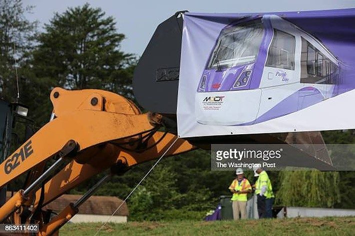

Signs by the Adele H. Stamp Student Union mark a closed sidewalk as a result of ongoing construction projects. (Photo by Abbi Ross)
The Purple Line is a main source of construction frustrations for University of Maryland
students, and new additions coming this winter mean increased work on campus.
By Abbi Ross
University of Maryland students can expect more construction work on campus in the coming
weeks and months.
While that is not a surprise to most, it can still be frustrating when the commute home from class
takes an extra 15 minutes or the sidewalk that was there yesterday is blocked off the next day.
On and off campus offices are trying their best to make sure students are aware of changes and
new projects, but it can still be annoying for students, staff and faculty.
For graduate student and undergrad alumni Will Beltran, one of his first memories of campus
involves the evergreen construction.
“My first memory of being here was back in 2016 when I toured here, and the new Cole Field
House was under construction,” Beltran said.
While the field house renovation was completed by the time he made it campus as a freshman
in 2018, the campuses neverending list of projects continues on strong.
Beltran said there has been a lot of work done on campus in his four, soon to be five years on
campus. While he said the construction on the 77,000-square-foot public policy building that
was completed earlier this was a lot at times since he lived on South Campus, it is the Purple
Line work that is the most notable.
“That’s been the most annoying thing because it causes weird traffic jams,” Beltran said. “It’s the
roadway going down the middle of campus and it gets used all the time. I honestly don’t
remember it being a two way road since I’ve been here. It might have been my first semester.”
Campus Drive where it becomes a one-way road by the Adele H. Stamp Student Union on Dec. 6. For some students, one-way routes and constant work are the only Campus Drive they have seen since coming to campus. (Video by Abbi Ross)
Work related to the Purple Line is actually not under the University of Maryland’s control, said
Bill Olen, the Executive Director of Planning and Construction at UMD.
The construction on campus is not all under Olen’s department, some projects like the Purple
Line fall under the state.
“A lot of what you see on campus is associated with the Purple Line,” Olen said.
The Purple Line will be a 16-mile light rail line extending from Bethesda to New Carrollton,
according to the project website. It will cost an estimated $3.4 billion to construct.
This year’s mounting extreme weather costs reflect an increasing trend in billion-dollar disasters across the U.S.
The groundbreaking for the line was held in Aug. 2017 and work was originally slated to be
completed in 2022, but complications with the original contractor pushed that back to 2026, said
Courtney Brown, senior project manager for the office of the vice president

A banner shows the Purple Line train that will connect new parts of Maryland, including the UMD campus, at the groundbreaking August 28, 2017 in Hyattsville. (Photo by Oliver Contreras/For The Washington Post via Getty Images)
A new build contractor, Maryland Transit Solutions, was officially signed on in April, according to
UMD’s Purple Line website.
On-campus work was able to continue at a smaller level throughout the changes though, Brown
said.
“We’ve had continued work on campus,” Brown said. “The new contractor came on board earlier
this year and mobilized over the summer in various places on the alignment. They are
scheduled to mobilize on campus in more substantial ways in mid-December and a major
mobilization at the end of the fall semester.”
Once active the line will give students new access to the community.
“It's going to be fantastic," Brown said. "In terms of increasing the connectivity of campus to the
local area, the greater region and even beyond."
It will provide a direct connection to the Red, Green and Orange Lines on the Washington
Metropolitan Area Transit Authority Metro. It will also connect to Amtrak, MARC and bus
services.
Brown said that making sure students, faculty and staff know what is going on with the
construction is a big focus as they move toward more substantial work on campus. There will be
communication campaigns as it gets closer to the time of work starting as well.
Those interested can also sign up for construction alerts by texting UMDPURPLE to 888777,
Brown said. There is also a Campus Construction Notice page for the Purple Line on the
University of Maryland website.
While the Purple Line might be the biggest project on campus for the time being, there are many
others ongoing as well.
The three largest project’s that Olen’s office is currently responsible for is the renovation of
Woods Hall, the new Wing 1 of the chemistry building and the field hockey and women’s
lacrosse renovation and addition.
“There are a lot of smaller projects, but those are the three big ones that I say are the most
noticeable,” Olen said.
Olen said the impact of these three projects should be minimal to students.
Olen has seen a lot of growth at the University of Maryland and throughout the institution's other
campuses in his seven years as executive director of planning and construction.
“Just in the last several years we’ve added about a million square feet of new space on campus
in either academic housing or dining,” Olen said.
This includes the Heritage Community, the Edward St. John Learning and Teaching Center, Clark Hall and the public policy building.
With constant construction, comes complaints.
Olen said they receive two main complaints — about pathways around construction sites and
complaints from dormitories when construction is near them.
The department has made an effort in recent years to make sure students have safe pathways
and that they are well marked. This work includes widening sidewalks, adding streetlights and
making sure students know about the new routes.
To address issues with work around the dormitories, Olen said they have implemented quiet
hours around the residence halls and avoid work on weekends.
Beltran said that while annoying at times, he knows that the work is needed.